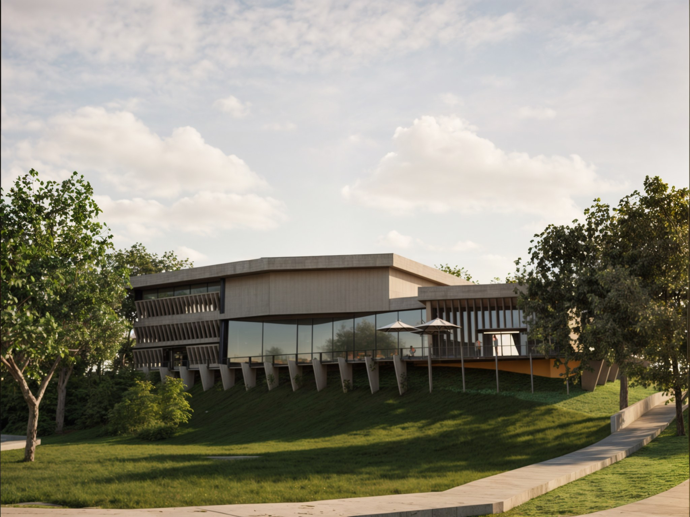
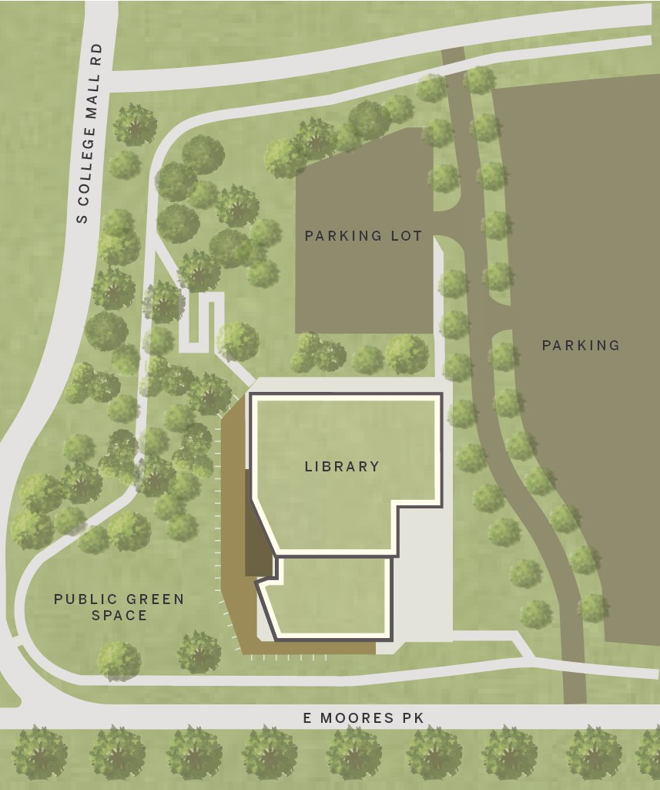
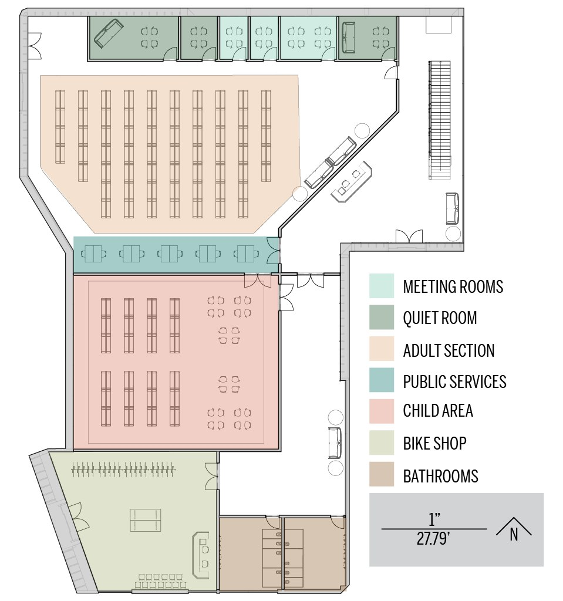
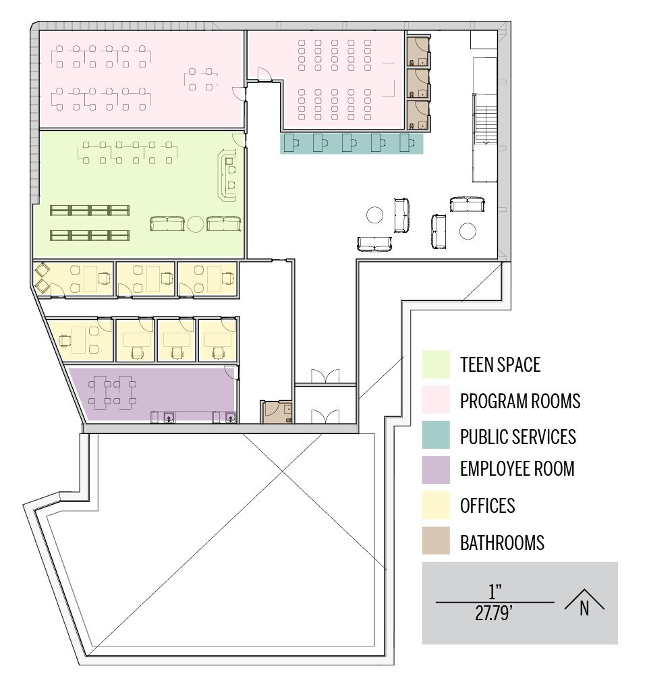
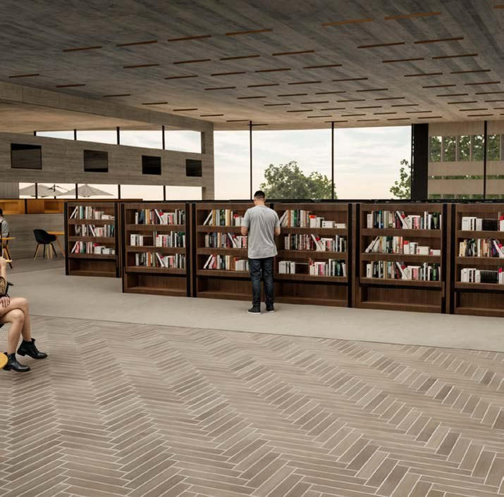
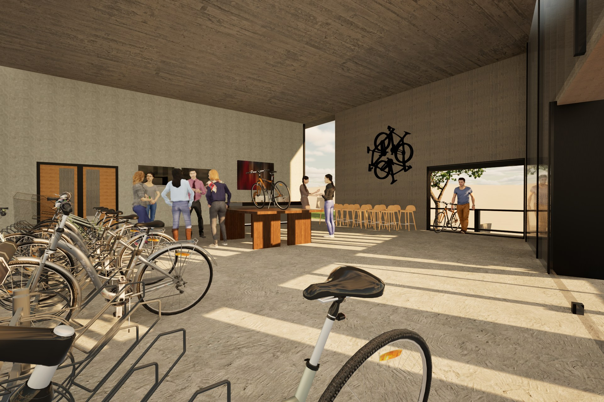

The building is organized around a long hempcrete form that splits into two wings that follow the slope. One side holds the library, while the other includes bike repair and recycling spaces. A shared entrance connects both programs, and the building extends over the slope on angled columns. A glass reading room faces the lawn and gives the library a more open connection to the site.




